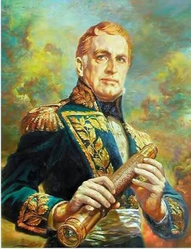
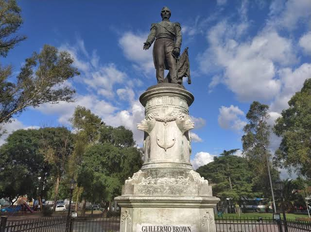
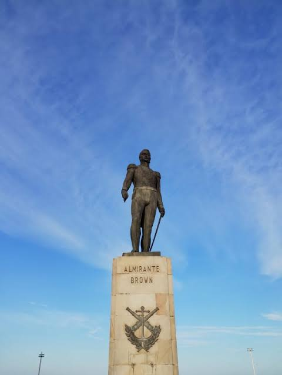
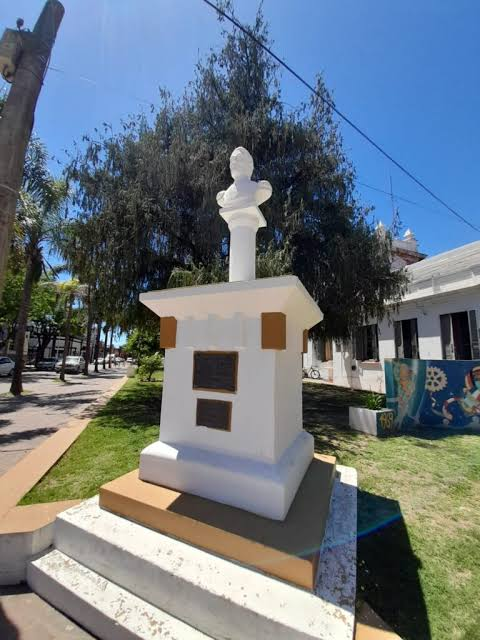
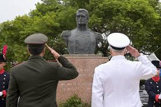

La última frase atribuida al Almirante Guillermo Brown en su lecho de muerte, pronunciada el 3 de marzo de 1857, es uno de los legados conceptuales más profundos de la historia militar argentina:
"Compañero, veo que el viaje es largo... pero con el principal a bordo, ya no hay peligro; ya tengo el práctico a bordo."
(Nota: Algunas transcripciones históricas alternan las palabras "el principal" por "el Gran Capitán" o "Dios", manteniendo siempre el término náutico de "el práctico").
A continuación, se presenta un análisis detallado de sus componentes, su simbología náutica y su impacto en la identidad naval:
1. La Metáfora Náutica del Tránsito FinalPara un hombre que pasó más de 50 años en el mar, la transición entre la vida y la muerte no podía entenderse de otra manera que como la partida hacia un nuevo viaje.
"El viaje es largo": Representa la aceptación de la muerte no como un fin absoluto, sino como una travesía desconocida y definitiva hacia la eternidad.
"El principal" o "El Gran Capitán": Es una referencia directa a Dios.
Brown, de profunda fe católica, traslada la estructura jerárquica de un buque de guerra al plano espiritual.
Para él, el Universo es el navío, y Dios es el Comandante Supremo.
2. El Concepto Técnico de "El Práctico"En la jerga marinera, el práctico es el piloto experto local que sube a bordo de un barco para guiarlo de forma segura a través de canales peligrosos, bancos de arena o entradas de puertos difíciles.
El contexto del Río de la Plata: Brown basó todas sus victorias (como Juncal o Los Pozos) en saber dónde encallaban los barcos.
Sabía perfectamente que un error sin práctico significaba el naufragio.
El significado espiritual: Al decir "ya tengo el práctico a bordo", Brown expresa una paz absoluta.
Siente que la divinidad ha tomado el timón de su alma para conducirlo a través de las "aguas turbulentas y desconocidas" de la muerte hacia un puerto seguro (el descanso eterno).
3. Dimensión Psicológica y Humildad MilitarLa frase fue pronunciada ante su médico y amigo de confianza, el doctor José Benito Nazar.
Analizada desde la psicología del prócer, revela dos rasgos fundamentales:Humildad absoluta: Quien fuera el Almirante invicto, el hombre que decidía el rumbo de flotas enteras y el destino de naciones, reconoce que en ese último tramo él ya no es el capitán.
Cede el mando voluntariamente.Serenidad ante el final: No hay desesperación, miedo ni lamentos políticos por las guerras civiles que desangraban a la Argentina en esa época.
Hay una resignación profesional y ordenada, propia de un viejo marino que ve llegar la tormenta definitiva con el barco en condiciones.
4. Legado Oficial en la Armada ArgentinaEsta frase no quedó en el olvido, sino que fue adoptada oficialmente como un pilar de la doctrina y la tradición de la Armada Argentina:Símbolo de la buena muerte: En la formación de los cadetes de la Escuela Naval, la frase se enseña como el ejemplo máximo de cómo debe morir un marino: con honor, fe y manteniendo el lenguaje de su vocación hasta el último suspiro.
Conexión con su vida: Cierra un círculo perfecto con su otra gran frase de batalla ("¡Fuego rasante, que el pueblo nos contempla!"). Mientras la primera era un grito de acción hacia el mundo exterior, su frase final es una orden de navegación hacia su propio interior.
Su mausoleo fue declarado Monumento Histórico Nacional.Detalles del lugar de descanso
Ubicación: Ciudad de Buenos Aires, Argentina.Lugar exacto: Cementerio de la Recoleta.
Reconocimiento: Su sepulcro es un Monumento Histórico Nacional donde también yacen los restos de integrantes de su familia, como su hija Elisa.





María Cristina Brown: Chozna (descendiente de quinta generación) del almirante, perteneciente a la rama de su hijo mayor Guillermo. Es conocida por custodiar reliquias familiares históricas como el anillo de compromiso de Elizabeth Chitty y participar activamente en homenajes junto al Instituto Nacional Browniano